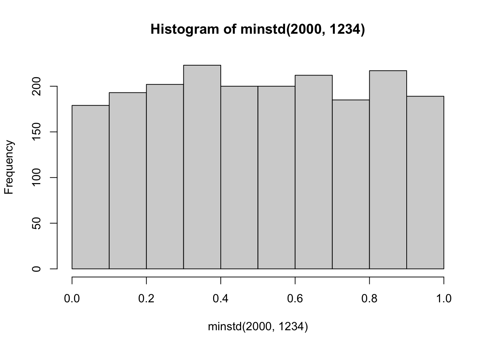
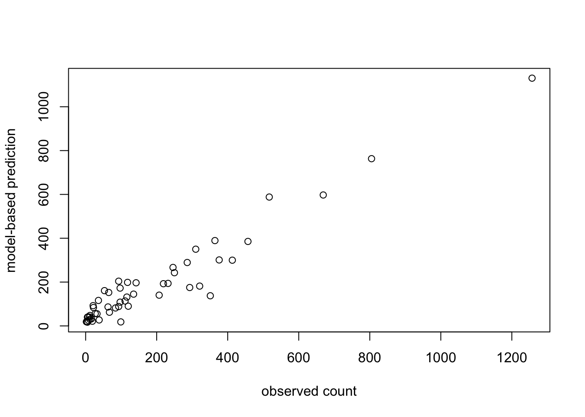
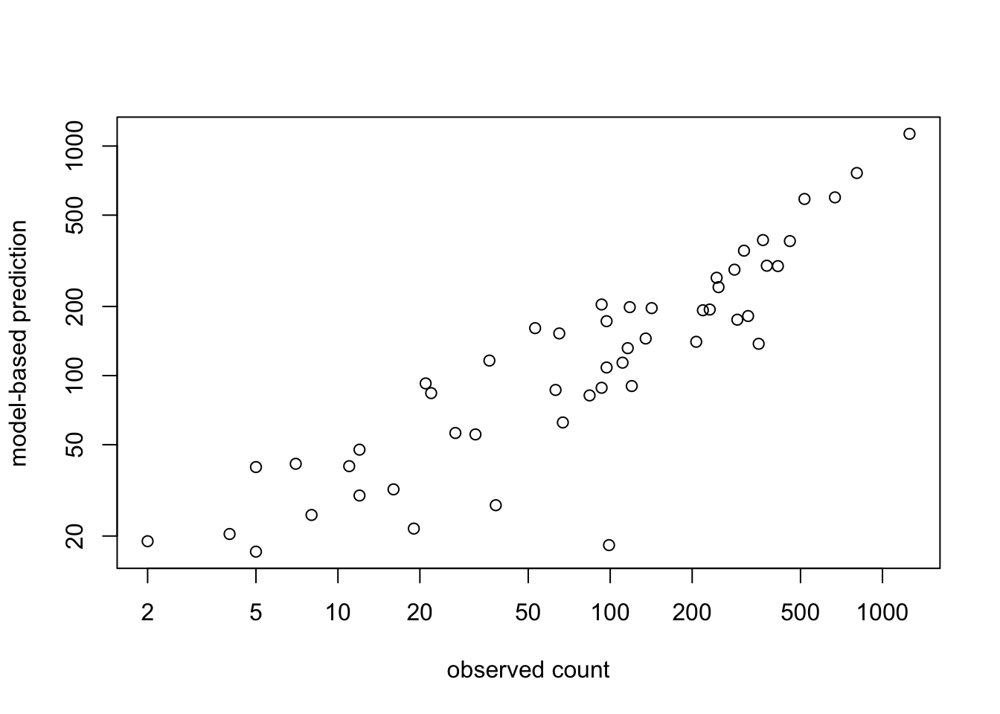
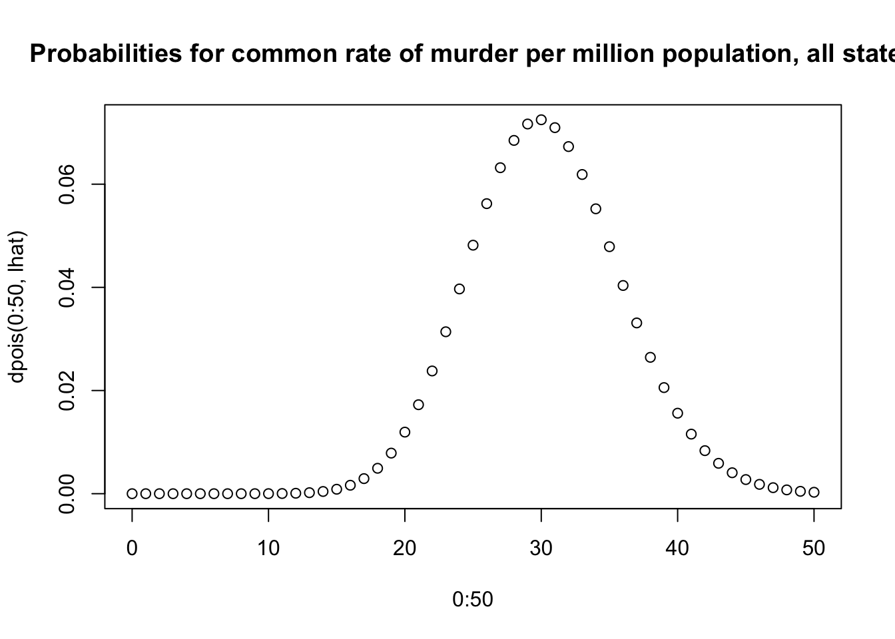
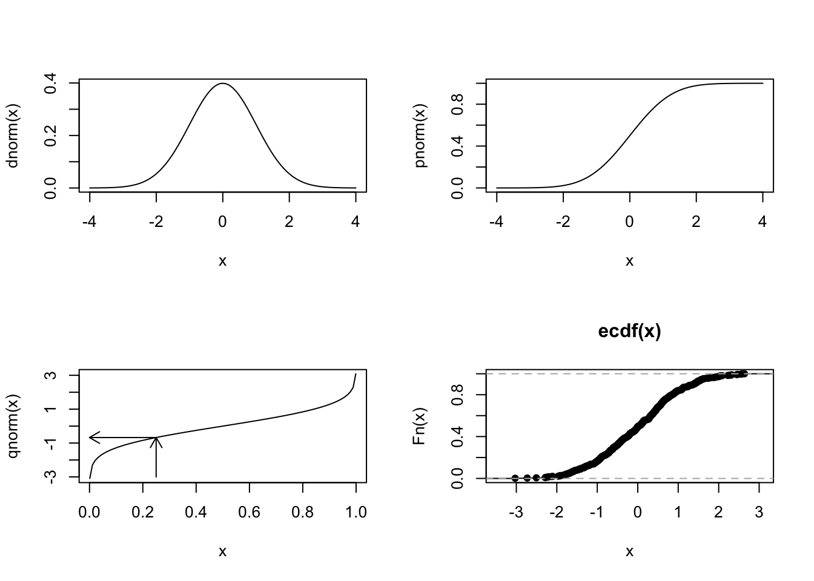
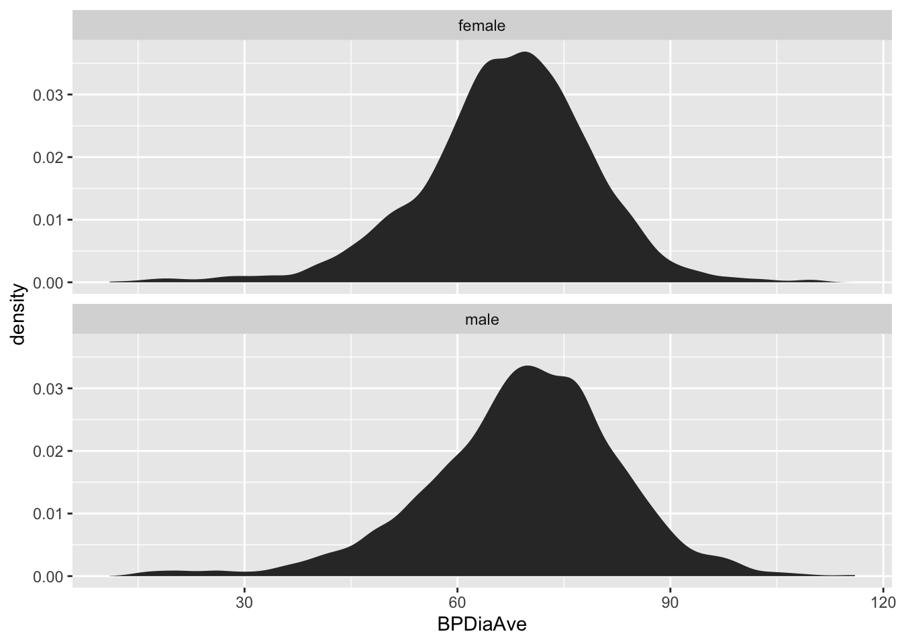
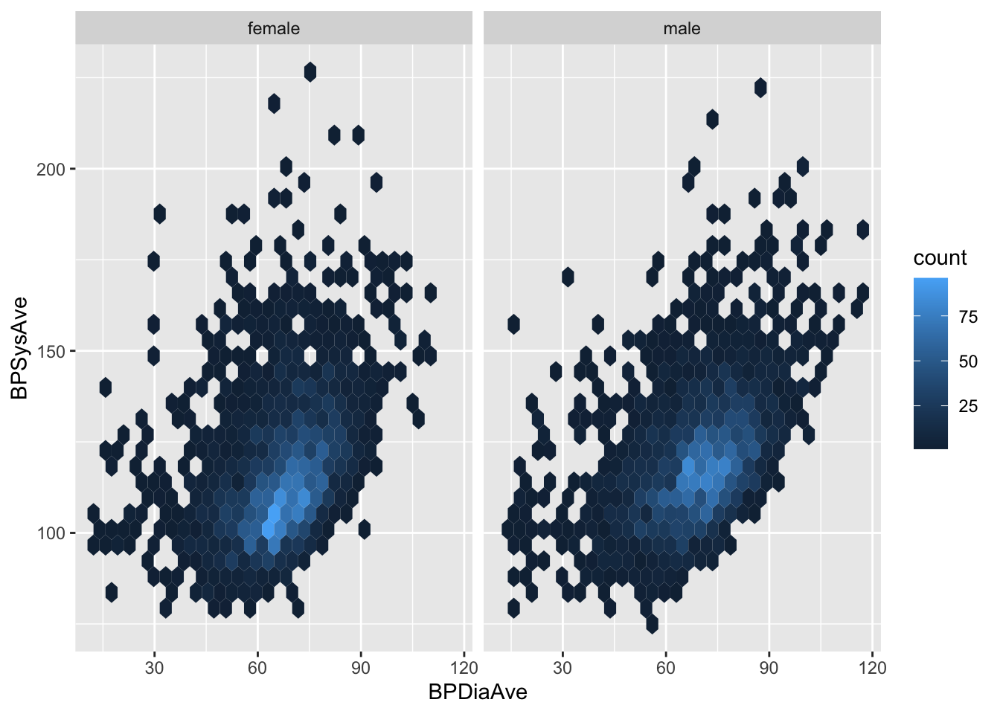

lcg <- function(n, seed, a, c, m) {
u <- numeric(n)
x <- seed
for (k in seq_len(n)) {
x <- (a * x + c) %% m
u[k] <- x / m
}
u
}Distributions, PRNG, moments, lm
Keywords
Probability
Prologue from first day of course
The course includes activities in three main domains:
- surveying data science and statistics as foundations of basic integrity and efficiency of research
- introducing and using tools for implementing data science methods for research
- critically exploring opportunities afforded by large language models and agentic AI for automation of repetitive detailed tasks
A significant concern with AI adoption in education is the risk of “de-skilling”: students need to be able to
- guide agentic processes to accomplish clear goals
- verify success and supply solutions in case of agent failure
- propose paths forward after success is achieved
The uniform distribution in the unit interval
We use \(U(0,1)\) to denote a probability model for real numbers \(0 \leq x \leq 1\). Under this model, the probability that a random quantity lies in the interval \([a, b]\), \(0 \leq a < b \leq 1\) is \(b-a\). Thus if \(X \sim U(0,1)\) the probability that \(X\) lies in \((0.40,0.55)\) is \(0.15\).
Exercise: Use R to reproducibly verify this claim. The function runif and logical and comparison and averaging operations may be used.
Exercise: By default runif produces points with “random” locations on the unit interval. How can you produce points \((x,y)\) with “random” locations on the unit square? How would you test for adequacy of this procedure?
Random number generation
Our approach to exploring randomness, probability, and statistical models is heavily based on simulation. The two parts of simulation studies are the experimental setup and the introduction of random elements to produce artificial experimental outcomes. How do computers produce random events?
In general they do not. Procedures that produce, deterministically, “unpredictable, random-seeming series” have been devised. An acronym in use is PRNG: pseudo-random number generation. Statistical testing is used to assess procedures according to their adequacy in resembling truly random processes.
What we want
We want a sequence of double precision numbers that “appear” random. We use \(x_1, \ldots\) to represent the sequence.
We want to be able to recompute any sequence generated previously. Thus we must have a representation of the state producing \(x_1\), and our generator must obey the setting of the initial state.
We want to be able to produce sequences that are “independent of one another”. “Hidden correlations” among sequences or sequence elements can lead to misleading conclusions from simulation experiments.
The linear congruential method
An important example is the “linear congruential method”. We use the “mod” function that provides the remainder after integer division. It is denoted %% in R.
\[ x_{k+1} = (a\,x_k + c) \bmod m, \qquad k = 0, 1, 2, \ldots \]
where
- \(m > 0\) is the modulus,
- \(a\) is the multiplier,
- \(c\) is the increment,
- \(x_0\) is the seed.
Every \(x_k\) is an integer in \(\{0, 1, \ldots, m-1\}\), a finite set, so the period can be at most \(m\). Dividing by \(m\) gives numbers \(u_k = x_k / m\) in \([0, 1)\).
Claude produced the following generator:
Effective choices of modulus, multiplier and increment has occupied researchers for decades. See the discussion of Park and Miller (1988). An implementation of the “minimum standard” generator is
m31 <- 2^31
minstd <- function(n, seed) lcg(n, seed, a = 16807, c = 0, m = m31 - 1) # Park & Miller (1988)
hist(minstd(2000, 1234))
Exercise: Define a chi-squared procedure for assessing the adequacy of this generator.
Exercise: What does the following result imply about the granularity of floating point numbers produce by R’s default PRNG?
set.seed(1234)
tail(sort(table(runif(1e6))))
0.940550232538953 0.960146875819191 0.973396466113627 0.982309455052018
2 2 2 2
0.986166050890461 0.989923388231546
2 2 Families of probability models
We have discussed “expectation” in an intuitive and informal way. We have described probabilities a little more formally. For now our interpretation of probability is long-run relative frequency, and “long run” means “established through an infinite number of trials”.
We may use “model” or “distribution” to refer to the conceptual frameworks used to describe random variables or processes. It is important to remember that any collection of numbers forms a distribution, but a probability distribution is a specific theoretical structure that may be used to help understand aspects of collections of numbers we encounter in scientific work.
Bernoulli trials
We had the simplest possible simulation of card shuffles and draws. We observed a single card per shuffle. Fix attention on a specific card face, say, 2 of hearts. After a shuffle, we draw that card from the top or we do not. Conventionally we use \(X\) to denote the random variable that is 1 if the draw is 2 of hearts, 0 if it is not. The set \(\{0, 1\}\) is the sample space for the experiment that examines the top card after a shuffle. The probability model for this experiment obeys the Bernoulli distribution with success probability \(p = 1/52\) for a fair deck.
The binomial distribution
Here we have a fixed number of trials that end in one of two possible outcomes. As an example, the Saxony dataset in the vcdExtra package has counts of numbers of male children in families with 12 children. Let \(X\) denote the number of males, the model asserts that \[ Pr(X = k) = \binom{n}{k} p^k(1-p)^{n-k}, k = 0, \ldots, n \] where \(n = 12\) for the Saxony data, and \(p\) is the probability that a given child’s sex is male. Setting \(p = 0.5\), we would have
library(vcdExtra)
data(Saxony)
SaxonynMales
0 1 2 3 4 5 6 7 8 9 10 11 12
3 24 104 286 670 1033 1343 1112 829 478 181 45 7 as the observed data, and
dbinom(0:12, 12, .5)*6155 [1] 1.503 18.032 99.177 330.591 743.829 1190.127 1388.481 1190.127
[9] 743.829 330.591 99.177 18.032 1.503as the expected number of males under the specified binomial model.
Exercise: The Saxony data represent counts of male sons in families of size 12. Produce a data.frame with one record per individual that records family identifier and gender. Use the data in this table to estimate the probability that a baby in this collection of families was born male.
The hypergeometric distribution
Consider the outcome of drawing five cards from a fair deck. Our outcome is the number of hearts. We are drawing without replacement. There are a total of \(\binom{52}{5}\) ways of selecting 5 cards, and the number of ways of obtaining \(k\) hearts is \(\binom{13}{k} \times \binom{39}{5-k}\). Thus \[ Pr(X = k) = \frac{\binom{13}{k} \binom{39}{5-k}}{\binom{52}{5}}, k = 0, \ldots, 5. \]
Exercise: Use our card-shuffling setup to estimate the probability of getting a hand with exactly two hearts. Assess the accuracy of your estimate using dhyper.
The Poisson distribution
A series representation of the antilog function \(\exp(x)\) is \[ e^x = \sum_{k=0}^\infty \frac{x^k}{k!}. \] Thus we can define a probability mass function, that of the Poisson distribution, as \[ Pr(X = k) = \frac{e^{-\mu} \mu^k}{k!}, k = 0, 1, 2, \ldots. \] The values of \(k\) are all the non-negative integers. This is an example of a countably infinite sample space. The parameter \(\mu\) is the average value of \(X\).
It is typical to use the Poisson distribution as a first approach to modeling rates of rare events. In the case of the murders dataset, let \(\lambda\) denote the risk per million individuals of being a victim of homicide. Then we can write \(\mu = \lambda N/10^6\) as the average count for a state of size \(N\) and estimate estimate \(\lambda\) as the mean number of murders per million population.
library(dslabs)
data(murders)
lhat = sum(murders$total)/sum(murders$population)*1e6
round(lhat,3)[1] 30.35pd = data.frame(pred=lhat*murders$population/1e6, obs=murders$total)
plot(pd$obs, pd$pred, xlab="observed count", ylab="model-based prediction")
Since we are seeing variation over orders of magnitude, log transformation is in order.
plot(pd$obs, pd$pred, xlab="observed count", ylab="model-based prediction", log="xy")
The Poisson model prescribes probabilities for counts of murders per million inhabitants.
plot(0:50, dpois(0:50, lhat), main="Probabilities for common rate of murder per million population, all states")
Later we consider how to evaluate adequacy of such models in application to specific data.
The Gaussian distribution
We have seen the expression for the Gaussian density in the slides. \[ f(x) = \frac{1}{\sqrt{2 \pi \sigma^2}}\exp\{ - \frac{(x - \mu)^2}{2 \sigma^2} \} \] Parameters \(\mu\) and \(\sigma^2\) determine location and dispersion of the distribution.
Working with distributions in R
The d-, p-, q-, r- functions are available for a wide variety of probability models. Examples for Poisson:
dpois(x, mu)computes the probability mass function for the Poisson model with mean valuemuppois(x, mu)computes the probability that data from a Poisson model with mean valuemutake values less than or equal to xqpois(p, mu)computes the value below whichppercent of data from a Poisson model with mean valuemuwill be foundrpois(n, mu)produces a vector withnrandom values representing realizations of the Poisson model with mean valuemu
Try them out. First, with a discrete distribution.
set.seed(1234)
x = rpois(1000, 4.5)
mean(x)[1] 4.574(pat3 = ppois(3.2, 4.5))[1] 0.3423(fr = mean(x <= 3.2))[1] 0.345qpois(fr, 4.5)[1] 4(pat1 = ppois(1.8, 4.5))[1] 0.0611(fr = mean(x <= 1.8))[1] 0.063qpois(fr, 4.5)[1] 2Now with a continuous distribution.
set.seed(1234)
x = rnorm(10000, 4.5)
mean(x)[1] 4.506(pat3 = pnorm(3.2, 4.5))[1] 0.0968(fr = mean(x <= 3.2))[1] 0.0936qnorm(fr, 4.5)[1] 3.181(pat1 = pnorm(1.8, 4.5))[1] 0.003467(fr = mean(x <= 1.8))[1] 0.0037qnorm(fr, 4.5)[1] 1.822Here are some function traces to know and understand. ecdf is particularly interesting for its design, returning a function.
par(mfrow=c(2,2))
curve(dnorm, -4,4)
curve(pnorm, -4,4)
curve(qnorm, .001, .999)
arrows(.25,-3,.25,qnorm(.25),length=.1)
arrows(.25,qnorm(.25),0,qnorm(.25),length=.1)
x = rnorm(500)
plot(ecdf(x))
Model parameters and sample statistics
Definitions
We have been very informal in our discussion of expected values. There are two important expectation concepts to get clear on.
For a random variable \(X\) with discrete distribution on sample space \(S\) and probability mass function \(p\), the expectation is the quantity \[ E(X) = \sum\limits_{x \in S} xp(x) \] which we sometimes denote \(\mu\).
The variance is the quantity \[ Var(X) = E((X - E(X))^2) = \sum\limits_{x \in S} (x - \mu)^2 p(x). \]
For continuous distributions like the Gaussian or Chi-squared, the density function is used: \[ E(X) = \int\limits_{x \in S} xf(x)dx; \] \[ Var(X) = \int\limits_{x \in S} (x - \mu)^2 f(x)dx. \]
The sample average is often used to estimate the expected value of a random variable. For \(n\) observations it is defined as \[
\bar{x} = \frac{x_1 + x_2 + \cdots + x_n}{n}.
\] The function mean in R computes this for any vector of numbers.
The sample variance is defined as \[
\hat{s}^2 = \frac{\sum_i (x_i - \bar{x})^2}{n-1}
\] and this is computed by var in R. The denominator used reflects the degree of freedom lost by estimating \(\bar{x}\) from the data.
Finally, we introduce a measure of bivariate association: covariance. \[ Cov(X, Y) = E(XY) - E(X)E(Y). \] Note that \(Cov(X,X) = Var(X)\).
The correlation coefficient is the covariance divided by the product of standard deviations of \(X\) and \(Y\). \[ Corr(X, Y) = \frac{Cov(X, Y)}{\sqrt{Var(X) \cdot Var(Y)}} \]
Examples
library(NHANES)
library(dplyr)
library(ggplot2)
data(NHANES)
NHANES|> filter(BPDiaAve>0) |> select(BPDiaAve, Sex) |>
summarise(m=mean(BPDiaAve, na.rm=TRUE), s=sd(BPDiaAve, na.rm=TRUE), .by=Sex) Sex m s
1 male 69.20 13.67
2 female 66.89 12.26ggplot(NHANES |> filter(BPDiaAve>0), aes(x=BPDiaAve)) +
geom_area(stat="density") + facet_wrap(Sex~., ncol=1)
The quantitative differences in mean and dispersion are not readily perceived in the juxtaposition of densities.
For the bivariate measure, we look at SBP and DBP jointly.
cov(NHANES$BPSysAve, NHANES$BPDiaAve, use="complete.obs")[1] 99.22cor(NHANES$BPSysAve, NHANES$BPDiaAve, use="complete.obs")[1] 0.4007The covariance matrix for collection of random variables has pairwise covariances off the diagonal, and marginal variances on the diagonal. The correlation matrix has 1 on diagonal, and pairwise correlations off the diagonal.
cov(cbind(NHANES$BPSysAve, NHANES$BPDiaAve), use="complete.obs") [,1] [,2]
[1,] 297.50 99.22
[2,] 99.22 206.06cor(cbind(NHANES$BPSysAve, NHANES$BPDiaAve), use="complete.obs") [,1] [,2]
[1,] 1.0000 0.4007
[2,] 0.4007 1.0000We can visualize with hexagon bins to avoid overplotting.
ggplot(NHANES |> filter(BPDiaAve>0), aes(x=BPDiaAve, y=BPSysAve)) +
geom_hex() + facet_wrap(Sex~., ncol=2)
“Compact estimation” from tables
A call to lm
Let’s focus on the 2011-2012 subset from NHANES.
nh11 = NHANES |> filter(SurveyYr == "2011_12")
library(DT)
datatable(nh11[1:100, 1:6])Scroll through the table. Note that there are repeated values of ID! This is a consequence of the “resampling” process that generated NHANES from NHANESraw in the package. Individuals in this dataset represent groups of individuals with similar demographic characteristics. Multiple “copies” of individuals will be present for those individuals with highly prevalent configurations of demographic variables. We are going to ignore this feature of the data in the remainder of this document. We will compute statistics on variables in this dataset as if they are of interest in their own right, collected on independent individuals, with no specific epidemiological inference proposed.
ss = split(nh11, nh11$ID)
nr = sapply(ss,nrow)
o = order(nr, decreasing=TRUE)
datatable(rbind(ss[[o[1]]], ss[[o[2]]]))The following dplyr code assembles a table of means of systolic blood pressure in strata formed by decade of age.
nh11 |> summarise(m=mean(BPSysAve,na.rm=TRUE), .by=AgeDecade) AgeDecade m
1 10-19 107.21
2 40-49 118.52
3 <NA> 141.24
4 0-9 98.93
5 30-39 115.50
6 50-59 125.20
7 20-29 113.25
8 60-69 128.22
9 70+ 131.70The same mean values (with the exception of the one for missing AgeDecade) are recovered by using the lm function with specific arguments for formula and data.
lm(BPSysAve~AgeDecade-1, data=nh11)$coef AgeDecade 0-9 AgeDecade 10-19 AgeDecade 20-29 AgeDecade 30-39 AgeDecade 40-49
98.93 107.21 113.25 115.50 118.52
AgeDecade 50-59 AgeDecade 60-69 AgeDecade 70+
125.20 128.22 131.70 Question: why are the values with missing age ignored in the call to lm?
Question: how can these values be used to obtain an additional estimated mean BPSysAve?
Question: what is the role of $coef in our use of lm?
Wilkinson-Rogers (1973) formula notation
Basic form
response ~ terms- Left of
~: response. It can be transformed (log(y)) - Right of
~: a sum of terms, each expanding to one or more design-matrix columns. - An intercept is included by default.
Operators
| Operator | Meaning | Expansion |
|---|---|---|
+ |
add a term | a + b → main effects of a, b |
: |
interaction only | a:b → the a×b interaction |
* |
crossing | a*b = a + b + a:b |
/ |
nesting | a/b = a + a:b (b nested within a) |
%in% |
nested within | b %in% a = a:b-style term |
^n |
all interactions up to order n | (a+b+c)^2 = a+b+c+a:b+a:c+b:c |
- |
remove a term | a*b - a:b = a + b |
-1 / +0 |
no intercept | y ~ x - 1 |
1 |
intercept (explicit) | y ~ 1 is the null model |
. |
all other columns in data |
y ~ . |
I() |
arithmetic as-is | I(x^2), I(a+b) |
Inside a formula, ^, *, + and - are formula operators. Wrap in I() when you mean ordinary arithmetic.
Terms can be functions
log(x), poly(x, 2), splines::ns(x, 3), factor(g), offset(log(t)).